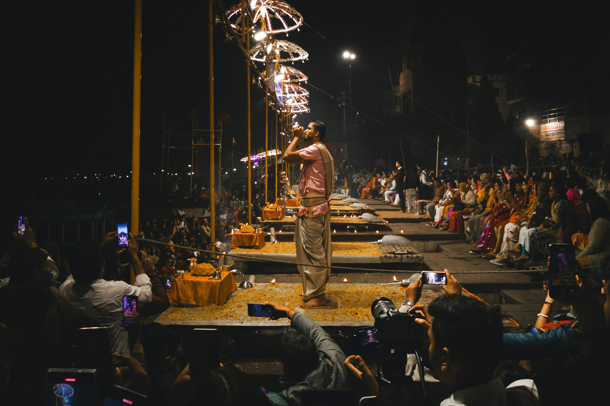
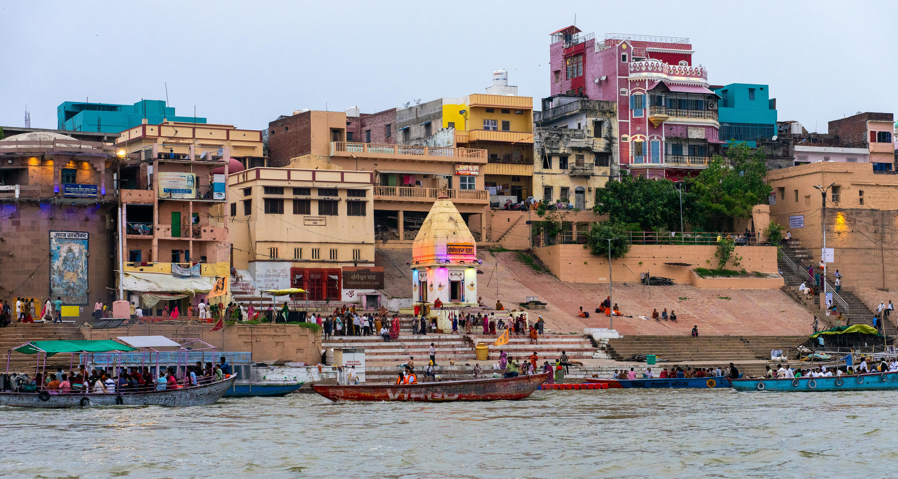
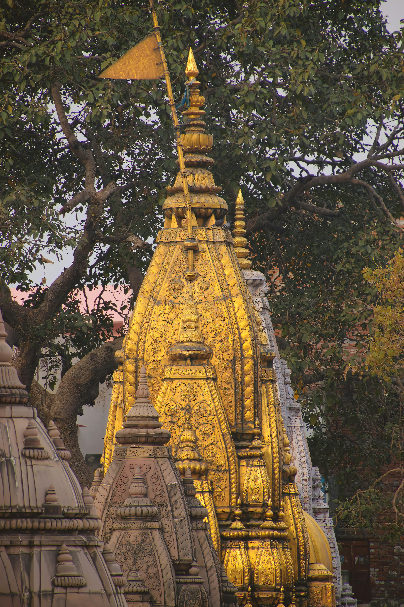
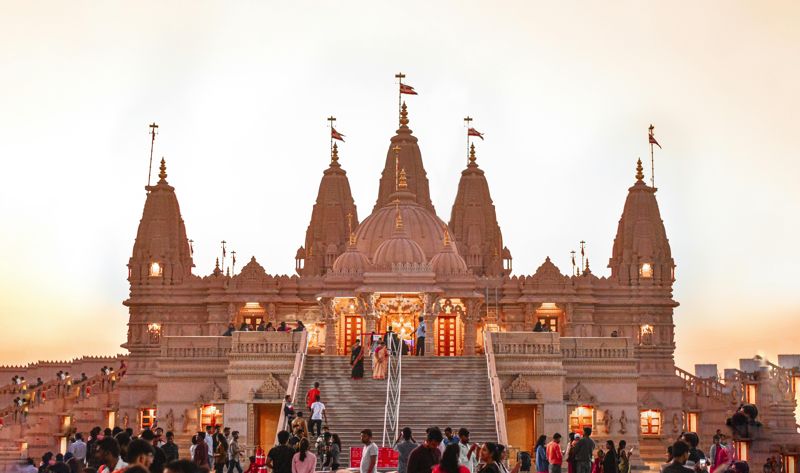
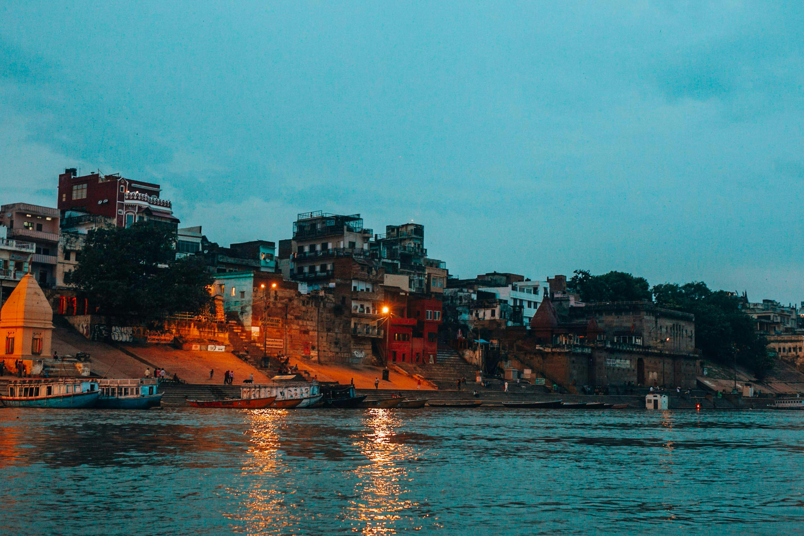
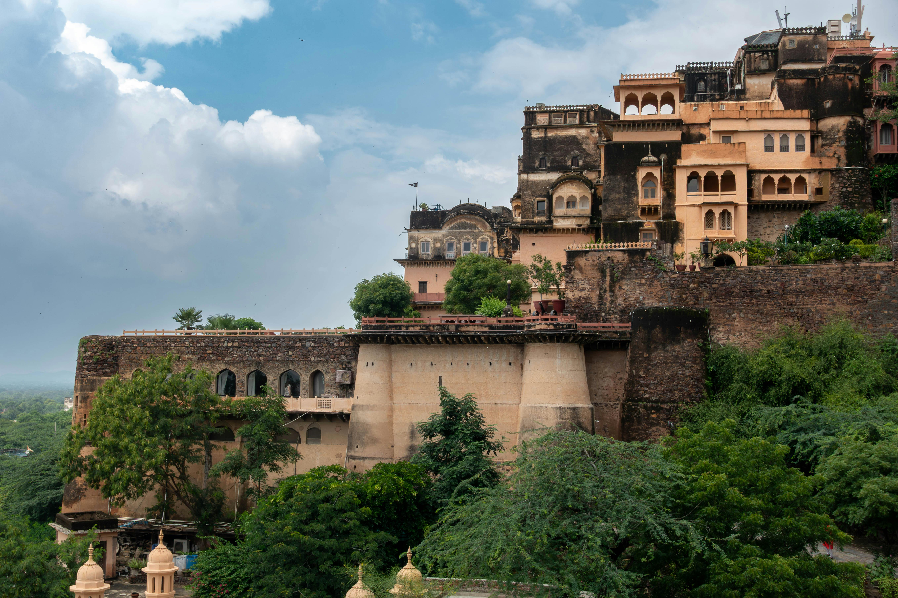
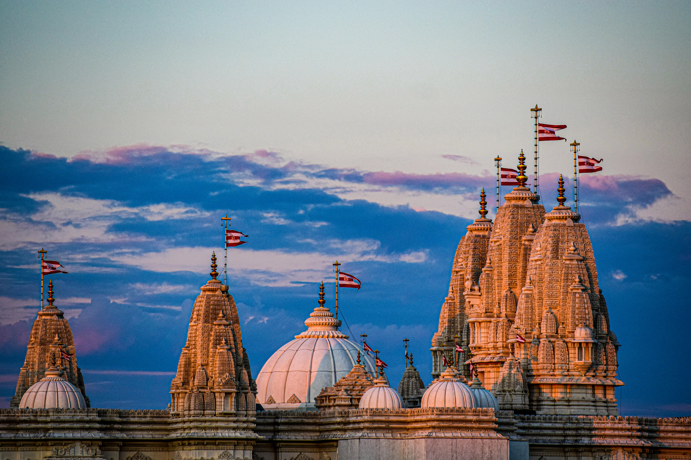
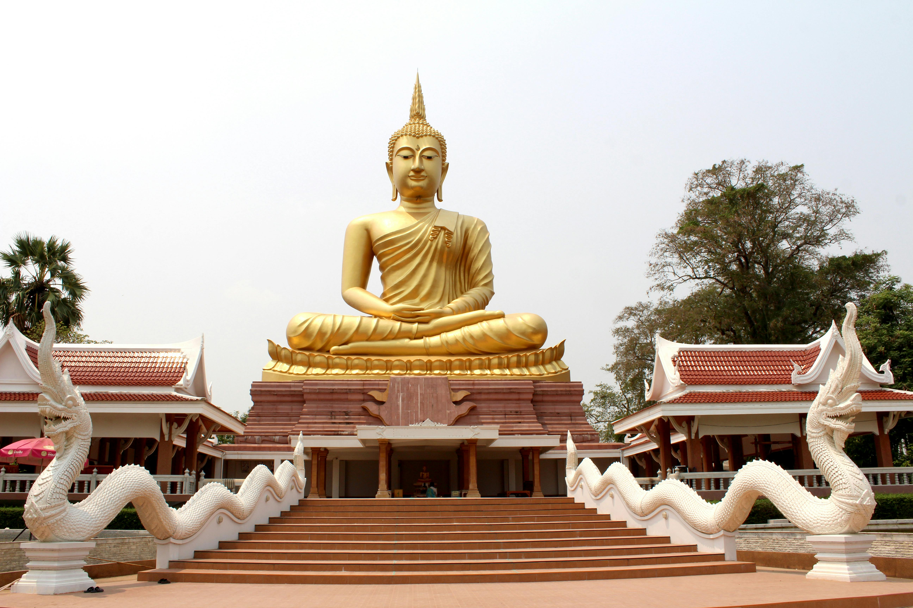

Discover the sacred ghats of Kashi & visit 50+ spiritual sites



The City of Light, Moksha, and Eternal Spirituality
Explore Sacred GhatsExperience the divine, explore the ancient, embrace the spiritual


Sacred darshan experiences for spiritual seekers



Find your spiritual path
Plan Your Kashi Yatra
FIND AUTHENTIC BANARASI FOOD NEAR YOU


